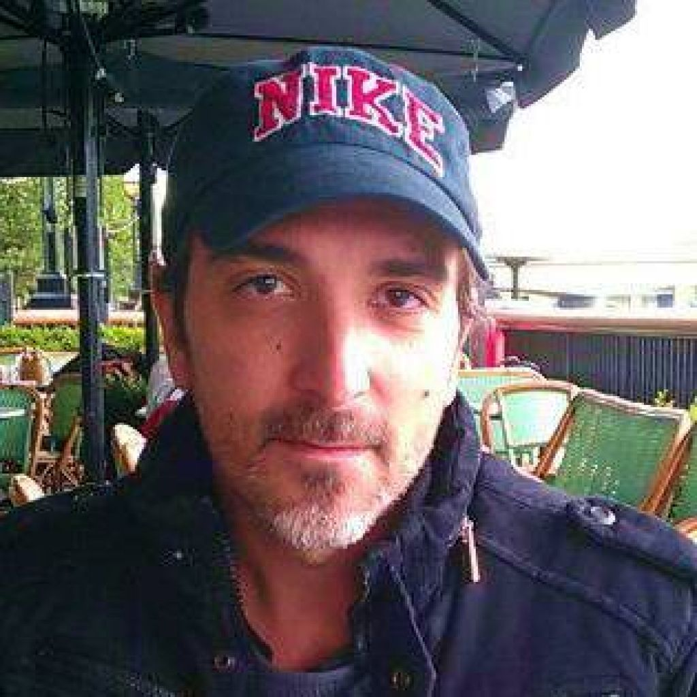

Agradecimientos
En este libro, los personaje están inspirados en algunos amigos, algunas partes de la historia han sido creadas también por algunos amigos. También han intervenido personas en la corrección del libro.
Wlancelot
Mario, conocido también como Wlancelot, es productor musical y Dj. En libro ayudó a la revisión de ortografía y posibles faltas o verbos mal copiados. Gracias a él se ha podido sacar el libro sin faltas de ortografía :). Sus redes sociales: YouTube Spotify
